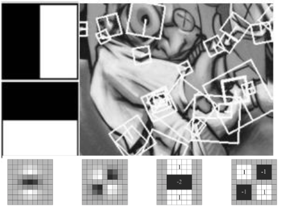
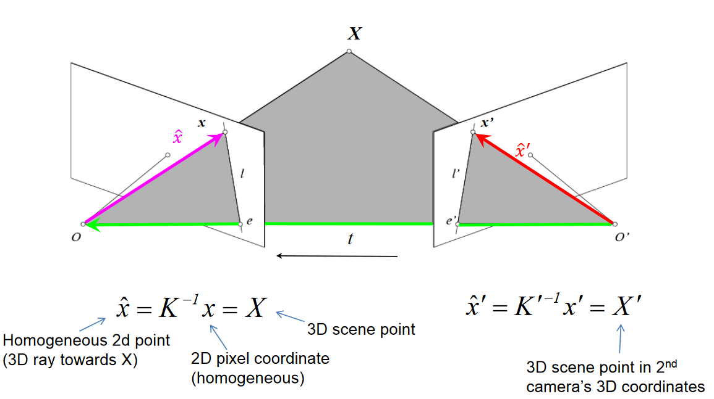
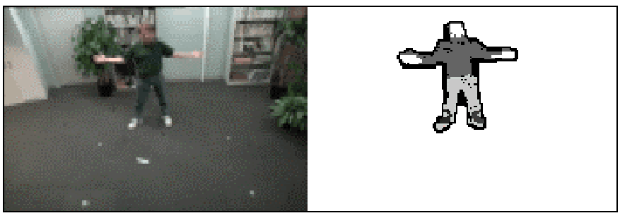

CSC477 Introduction to Mobile Robotics
Weeks #11 & #12: Multiview Geometry, Visual Odometry, Visual SLAM
Motivation
- We have already seen quite successful SLAM methods based on laser sensors. Why bother with vision?
- Camera technology cheap and ubiquitous
- Camera is a passive sensor, lower energy
- Some environments/platforms can’t support laser
- Vision is quite a “rich” source of information
How hard is computer vision?
Marvin Minsky, MIT
Turing award, 1969
“In 1966, Minsky hired a first-year undergraduate (JS) student and assigned him a problem to solve over the summer: connect a television camera to a computer and get the machine to describe what it sees.”
Crevier 1993, pg. 88
Depth perception can be ambiguous from just a single image
What do humans see?
Count the black dots! :0)
Peripheral drift illusion
Where do humans fixate?
Visual saccades
Camera obscura: dark room
- Known during classical period in China and Greece (e.g., Mo-Ti, China, 470BC to 390BC)
Lens Based Camera Obscura, 1568
Oldest surviving photograph
- Took 8 hours on pewter plate
Joseph Niece, 1826
Lenses
A lens focuses parallel rays onto a single focal point
- focal point at a distance f beyond the plane of the lens
- f is a function of the shape and index of refraction of the lens
- Aperture of diameter D restricts the range of rays
- aperture may be on either side of the lens
- Lenses are typically spherical (easier to produce)
Depth of field
Changing the aperture size affects depth of field
- A smaller aperture increases the range in which the object is approximately in focus
Flower images from Wikipedia http://en.wikipedia.org/wiki/Depth_of_field
To avoid thinking about
image inversion
Point aperture \(\rightarrow\) nearly every pixel in the
image is in focus
To avoid thinking about
image inversion
Point aperture \(\rightarrow\) nearly every pixel in the
image is in focus \(\rightarrow\) almost infinite depth of field
Aperture of nonzero diameter \(\rightarrow\) only pixels corresponding to objects on the focal plane are in focus \(\rightarrow\) narrow depth of field
Some times called the
thin-lens model
Shrinking the aperture
Why not make the aperture as small as possible?
- Less light gets through
- Diffraction effects…
Projective Geometry
Length (and so area) is lost.
Length and area are not preserved
Projective Geometry
Angles are lost.
Projective Geometry
What is preserved?
- Straight lines are still straight.
Chromatic aberration
Failure of a lens to focus all colors to the same convergence point.
Due to difference wavelengths having different refractive indeces
Field of View (Zoom, focal length)
Camera parameters
Focus - Shifts the depth that is in focus.
Focal length - Adjusts the zoom, i.e., wide angle or telephoto lens.
Aperture - Adjusts the depth of field and amount of light let into the sensor.
Exposure time - How long an image is exposed. The longer an image is exposed the more light, but could result in motion blur.
ISO - Adjusts the sensitivity of the “film”. Basically a gain function for digital cameras. Increasing ISO also increases noise.
How do we project 3D points to pixels? What is the measurement model?
From 3D points to pixels: pinhole camera
(1) Perspective projection \(\begin{bmatrix} x \\ y \end{bmatrix} = \pi(X, Y, Z)\)
(2) Conversion from metric to pixel coordinates
\[\begin{align} & u = m_x x + c_x \\ & v = m_y y + c_y\end{align}\]
\(m_x, m_y\) represent number of pixels per mm for the two axes
Perspective projection [x, y] = \(\pi\)(X, Y, Z)
By similar triangles: x/f = X/Z
So, x = f * X/Z and similarly y = f * Y/Z
Problem: we just lost depth (Z) information by doing this projection, i.e. depth is now uncertain.
From 3D points to pixels: pinhole camera
(1) Perspective projection \(\begin{bmatrix} x \\ y \end{bmatrix} = \begin{bmatrix} fX/Z \\ fY/Z \end{bmatrix} = \pi(X, Y, Z)\)
(2) Conversion from metric to pixel coordinates
\[\begin{align} & u = m_x x + c_x \\ & v = m_y y + c_y\end{align}\]
\(h_{\text{pinhole}}(X,Y,Z) = \begin{bmatrix} \frac{fm_x X}{Z} + c_x \\ \frac{fm_y Y}{Z} + c_y \end{bmatrix} + \text{noise in pixels}\)
From 3D points to pixels: pinhole camera
(1) Perspective projection \(\begin{bmatrix} x \\ y \end{bmatrix} = \begin{bmatrix} fX/Z \\ fY/Z \end{bmatrix} = \pi(X, Y, Z)\)
(2) Conversion from metric to pixel coordinates
\[\begin{align} & u = m_x x + c_x \\ & v = m_y y + c_y\end{align}\]
Usually presented as \(s \begin{bmatrix} u \\ v \\ 1 \end{bmatrix} = \begin{bmatrix} fm_x & 0 & c_x \\ 0 & fm_y & c_y \\ 0 & 0 & 1 \end{bmatrix} \begin{bmatrix} X \\ Y \\ Z \end{bmatrix}\)
Unknown depth/scale
\(\qquad\qquad\)
Camera calibration matrix
From 3D points to pixels: thin lens camera
(1) Perspective projection \(\begin{bmatrix} x \\ y \end{bmatrix} = \pi(X, Y, Z)\)
(2) Lens distortion \[[x^*, y^*] = D(x,y)\]
(3) Conversion from metric to pixel coordinates
\[\begin{align} & u = m_x x^* + c_x \\ & v = m_y y^* + c_y\end{align}\]
(2) Lens distortion [\(x^*, y^*\)] = D(x,y)
(2) Estimating parameters of lens distortion: \([x^*, y^*]\) = D(x,y)


\[\begin{align*} x^* &= x \frac{1 + k_1 r^2 + k_2 r^4 + k_3 r^6}{1 + k_4 r^2 + k_5 r^4 + k_6 r^6} \quad \text{where} \quad r = x^2 + y^2 \\ y^* &= y \frac{1 + k_1 r^2 + k_2 r^4 + k_3 r^6}{1 + k_4 r^2 + k_5 r^4 + k_6 r^6} \quad \text{where} \quad r = x^2 + y^2 \end{align*}\]
Correcting radial distortion
From 3D points to pixels: thin lens camera
If we have access to camera calibration parameters we can undo the lens distortion, and treat the measurement model as in the pinhole camera \(\rightarrow\) single-camera image rectification
(1) Perspective projection \(\begin{bmatrix} x \\ y \end{bmatrix} = \pi(X, Y, Z)\)
(2) Lens distortion \[[x^*, y^*] = D(x,y)\]
(3) Conversion from metric to pixel coordinates
\[\begin{align} & u = m_x x^* + c_x \\ & v = m_y y^* + c_y\end{align}\]
What visual or physiological cues help us to perceive 3D shape and depth?
Focus/defocus
Images from same point of view, different camera parameters
3d shape / depth estimates
[figs from H. Jin and P. Favaro, 2002]
Perspective effects
Image credit: S. Seitz
Stereo
Slides: James Hays and Kristen Grauman
Why multiple views?
Structure and depth can be ambiguous from single views…
Images from Lana Lazebnik
If stereo were critical for depth perception, navigation, recognition, etc., then rabbits would never have evolved.
Shape from shading
“Numerical schemes for advanced reflectance models for Shape from Shading”, Vogel, Cristiani
Texture
[From A.M. Loh. The recovery of 3-D structure using visual texture patterns. PhD thesis]
Occlusion
Rene Magritt’e famous painting Le Blanc-Seing (literal translation: “The Blank Signature”) roughly translates as “free hand” or “free rein”.
Human stereopsis
Human eyes fixate on point in space - rotate so that corresponding images form in centers of fovea.
Structure from Motion
“SFMedu: A Structure from Motion System for Education”, Jianxiong Xiao
Many depth from X methods. We are going to focus on
structure from motion and stereo \(\rightarrow\) part of multiple-view geometry
- Visual SLAM
- Localization and mapping with measurements usually coming from tracking image features:
- keypoints/corners
- edges
- image intensity patches
- Can use one or more cameras
- Localization and mapping with measurements usually coming from tracking image features:
- Visual Odometry
- Real-time localization with measurements usually coming from tracking image features:
- keypoints/corners
- edges
- image intensity patches
- Can use one or more cameras
- Real-time localization with measurements usually coming from tracking image features:
Multi-view geometry problems
A.k.a. mapping
3D point coordinates are unknown and to be estimated
Camera frame transformations are known
- Structure: Given projections of the same 3D point in two or more images, compute the 3D coordinates of that point
Multi-view geometry problems
3D point coordinates are unknown, but we won’t try to estimate them
Camera frame transformations are unknown and to be estimated
- Motion: Given a set of corresponding points in two or more images, compute the camera parameters
Multi-view geometry problems
3D point coordinates are unknown, but we won’t try to estimate them
Camera frame transformations are unknown, but we won’t try to estimate them
- Optical flow: Given two images, find the location of a world point in a second close-by image with no camera info.
We are estimating pixel displacement
from one image to the next
Multi-view geometry problems
- Stereo correspondence: Given a point in one of the images, where could its corresponding points be in the other images?
Basic underlying component in many of these problems:
keypoint detection and
matching across images
Local features: main components
1) Detection:
Find a set of distinctive key points.
2) Description:
Extract feature descriptor around each interest point as vector.
3) Matching:
Compute distance between feature vectors to find correspondence. \[d(x_1, x_2) < T\]
Local features: main components
Ideally, we want the descriptor
to be invariant (i.e. little to
no change) when there are
- viewpoint changes
(small rotation or translation
of the camera)
- scale-changes
- illumination changes
1) Detection:
Find a set of distinctive key points.
2) Description:
Extract feature descriptor around each interest point as vector.
3) Matching:
Compute distance between feature vectors to find correspondence. \[d(x_1, x_2) < T\]
Local measures of uniqueness
Suppose we only consider a small window of pixels
- What defines whether a feature is a good or bad candidate?
Slide adapted from Darya Frolova, Denis Simakov, Weizmann Institute.
Feature detection
Local measure of feature uniqueness
- How does the window change when you shift by a small amount?
“flat” region:
no change in all directions
“edge”:
no change along the edge direction
“corner”:
significant change in all directions
Slide adapted from Darya Frolova, Denis Simakov, Weizmann Institute.
Corner detectors
Harris
FAST
Laplacian of Gaussian detector
SUSAN
Forstner
Superimposed Harris keypoints
500 strongest
keypoints
Scale-space representation
Feature detection:
search for “corners”/keypoints
across many scales, and return
a list of (x, y, scale) keypoints
Characteristics of good features
- Repeatability
- The same feature can be found in several images despite geometric and photometric transformations
- Saliency
- Each feature is distinctive
- Compactness and efficiency
- Many fewer features than image pixels
- Locality
- A feature occupies a relatively small area of the image; robust to clutter and occlusion
Kristen Grauman
SIFT descriptor formation
- Compute on local 16 x 16 window around detection.
- Rotate and scale window according to discovered orientation \(\theta\) and scale \(\sigma\) (gain invariance).
- Compute gradients weighted by a Gaussian of variance half the window (for smooth falloff).

\(\qquad\qquad\qquad\qquad\qquad\)Actually 16x16, only showing 8x8
SIFT vector formation
- 4x4 array of gradient orientation histograms weighted by gradient magnitude.
- Bin into 8 orientations x 4x4 array = 128 dimensions.
Reduce effect of illumination
- 128-dim vector normalized to 1
- Threshold gradient magnitudes to avoid excessive influence of high gradients
- After normalization, clamp gradients > 0.2
- Renormalize
Local Descriptors: SURF

[Bay, ECCV’06], [Cornelis, CVGPU’08]
Fast approximation of SIFT idea
Efficient computation by 2D box filters & integral images
→ 6 times faster than SIFT
Equivalent quality for object identification
GPU implementation available
Feature extraction @ 200Hz
(detector + descriptor, 640x480 img)
K. Grauman, B. Leibe
Many other local descriptors
ORB
BRIEF
FREAK
RootSIFT-PCA
Feature matching

Overview of Keypoint Matching
- Find a set of distinctive key-points
- Define a region around each keypoint
- Extract and normalize the region content
- Compute a local descriptor from the normalized region
- Match local descriptors
Problem #1: landmark triangulation
Multi-view geometry problems
A.k.a. mapping
3D point coordinates are unknown and to be estimated
Camera frame transformations are known
- Structure: Given projections of the same 3D point in two or more images, compute the 3D coordinates of that point
Stereo
Epipolar geometry
- Case with two cameras with parallel optical axes \(\qquad \leftarrow\) First this
- General case
Stereo: Parallel Calibrated Cameras
- We assume that the two calibrated cameras (we know intrinsics and extrinsics) are parallel, i.e. the right camera is just some distance to the right of left camera. We assume we know this distance. We call it the baseline.

The right camera
is shifted to the
right in X direction
Stereo: Parallel Calibrated Cameras
- Points \(\mathbf{O_l, O_r}\) and P (and \(\mathbf{p_l}\) and \(\mathbf{p_r}\)) lie on a plane. Since two image planes lie on the same plane (distance f from each camera), the lines \(\mathbf{O_l O_r}\), and \(\mathbf{p_l p_r}\), are parallel.
Stereo: Parallel Calibrated Cameras
- Since lines \(\mathbf{O_l O_r}\) and \(\mathbf{p_l p_r}\), are parallel, and \(\mathbf{O_l}\) and \(\mathbf{O_r}\) have the same y, then also \(\mathbf{p_l}\) and \(\mathbf{p_r}\) have the same \(y: y_r = y_i\)!
Stereo: Parallel Calibrated Cameras
- Another observation: No point from \(\mathbf{O_l p_l}\), can project to the right of \(x_l\), in the right image. Why?
Stereo: Parallel Calibrated Cameras
- Because that would mean our image can see behind the camera…
Stereo: Parallel Calibrated Cameras
- We can then use similar triangles to compute the depth of the point P
In metric, not in pixel
coordinates. To convert
to pixel coordinates need
to use elements of the camera
calibration matrix.
Conclusion: if you have a well-calibrated and rectified (parallel) stereo camera you do not need to do least squares triangulation.
You can estimate depth via the disparity map.
Stereo: Parallel Calibrated Cameras
- For each point \(p_l = (x_l, y_l)\), how do I get \(p_r = (x_r, y_r)\)? By matching. Patch around \((x_r, y_r)\) should look similar to the patch around \((x_l, y_l)\).
Do this for all the points in the left image!
Stereo: Parallel Calibrated Cameras
- We get a disparity map as a result
Result: Disparity map (red values large disp., blue small disp.)
Stereo: Parallel Calibrated Cameras
- Smaller patches: more detail, but noisy. Bigger: less detail, but smooth
patch size = 5
patch size = 35
patch size = 85
You Can Do It Much Better…
[K. Yamaguchi, D. McAllester and R. Urtasun, ECCV 2014]
Multi-view geometry problems
3 x 7 = 21 variables to be estimated
7 pixel observations in each camera, so 21 pixel observations across all cameras
\(\rightarrow\) 42 constraints in total
- Structure: Given projections of the same 3D point in two or more images, compute the 3D coordinates of that point
Triangulation as a least squares problem
\[^wX^*, ^wY^*, ^wZ^* = \underset{^wp=[^wX, ^wY, ^wZ]}{\operatorname{argmin}} \sum_{k=1}^{K} \left\|\bar{z}^{(k)} - \mathbb{E}\left[h_\text{pinhole}\left(_{w}^kR^w p + ^kt_{kw}\right)\right]\right\|^2\]
\(\qquad\qquad\qquad\quad\)
Actual pixel observation of a
keypoint by camera frame \(\color{black}k\)
Expected pixel observation of
3D point \(\color{black}^wp\) by camera frame \(\color{black}k\)
\(h_{\text{pinhole}}(X, Y, Z) = \begin{bmatrix} \frac{f m_x X}{Z} + c_x \\ \frac{f m_y Y}{Z} + c_y \end{bmatrix} + n, \quad n \sim \mathcal{N}(0, R) \quad \text{noise (in pixels)}\)
Triangulation as a least squares problem
\[^wX^*, ^wY^*, ^wZ^* = \underset{^wp=[^wX, ^wY, ^wZ]}{\operatorname{argmin}} \sum_{k=1}^{K} \left\|\bar{z}^{(k)} - \mathbb{E}\left[h_\text{pinhole}\left(_{w}^kR^w \color{red}\boxed{\color{black}p} \color{black}+ ^kt_{kw}\right)\right]\right\|^2\]
Enumerate all cameras that
observed the keypoint.
The only term to be
optimized. The rest are known.
\(h_{\text{pinhole}}(X, Y, Z) = \begin{bmatrix} \frac{f m_x X}{Z} + c_x \\ \frac{f m_y Y}{Z} + c_y \end{bmatrix} + n, \quad n \sim \mathcal{N}(0, R) \quad \text{noise (in pixels)}\)
Triangulation as a least squares problem
\[^wX^*, ^wY^*, ^wZ^* = \underset{^wp=[^wX, ^wY, ^wZ]}{\operatorname{argmin}} \sum_{k=1}^{K} \left\|\bar{z}^{(k)} - \mathbb{E}\left[h_\text{pinhole}\left(\color{red}\boxed{\color{black}_{w}^kR^w p + ^kt_{kw}}\color{black}\right)\right]\right\|^2\]
\(\qquad\qquad \Big\uparrow\)
3D point expressed in the frame
of camera k
\(\color{black}^{k}p = {}^{k}_{w}R^{w}p + {}^{k}t_{kw}\)
\(h_{\text{pinhole}}(X, Y, Z) = \begin{bmatrix} \frac{f m_x X}{Z} + c_x \\ \frac{f m_y Y}{Z} + c_y \end{bmatrix} + n, \quad n \sim \mathcal{N}(0, R) \quad \text{noise (in pixels)}\)
Triangulation as a least squares problem
\[^wX^*, ^wY^*, ^wZ^* = \underset{^wp=[^wX, ^wY, ^wZ]}{\operatorname{argmin}} \sum_{k=1}^{K} \color{red}\boxed{\color{black} \left\|\bar{z}^{(k)} - \mathbb{E}\left[h_\text{pinhole}\left(_{w}^kR^w p + ^kt_w\right)\right]\right\|^2 }\]
\(\qquad\qquad \Big\uparrow\)
Reprojection error of point
\(\color{black}^{k}p = {}^{k}_{w}R^{w}p + {}^{k}t_{kw}\)
into camera k’s frame
\(h_{\text{pinhole}}(X, Y, Z) = \begin{bmatrix} \frac{f m_x X}{Z} + c_x \\ \frac{f m_y Y}{Z} + c_y \end{bmatrix} + n, \quad n \sim \mathcal{N}(0, R) \quad \text{noise (in pixels)}\)
Triangulation as a least squares problem
\(\begin{align} {}^w X^*, {}^w Y^*, {}^w Z^* &= \underset{{}^w p = [{}^w X, {}^w Y, {}^w Z]}{\text{argmin}} \sum_{k=1}^{K} \|\tilde{z}^{(k)} - \mathbb{E}[h_{\text{pinhole}}({}^k_w R {}^w p + {}^k t_{kw})] \|^2 \\ &= \underset{{}^w p = [{}^w X, {}^w Y, {}^w Z]}{\text{argmin}} \sum_{k=1, {}^w p \to {}^k p}^{K} \|\tilde{z}^{(k)} - \mathbb{E}[h_{\text{pinhole}}({}^k p)] \|^2 \\ \end{align}\)
\(h_{\text{pinhole}}(X, Y, Z) = \begin{bmatrix} \frac{f m_x X}{Z} + c_x \\ \frac{f m_y Y}{Z} + c_y \end{bmatrix} + n, \quad n \sim \mathcal{N}(0, R) \quad \text{noise (in pixels)}\)
Triangulation as a least squares problem
\(\begin{align} {}^w X^*, {}^w Y^*, {}^w Z^* &= \underset{{}^w p = [{}^w X, {}^w Y, {}^w Z]}{\text{argmin}} \sum_{k=1}^{K} \|\tilde{z}^{(k)} - \mathbb{E}[h_{\text{pinhole}}({}^k_w R {}^w p + {}^k t_{kw})] \|^2 \\ &= \underset{{}^w p = [{}^w X, {}^w Y, {}^w Z]}{\text{argmin}} \sum_{k=1, {}^w p \to {}^k p}^{K} \|\tilde{z}^{(k)} - \mathbb{E}[h_{\text{pinhole}}({}^k p)] \|^2 \\ &= \underset{{}^w p = [{}^w X, {}^w Y, {}^w Z]}{\text{argmin}} \sum_{k=1, {}^w p \to {}^k p}^{K} \left\| \begin{bmatrix} \tilde{u}^{(k)} \\ \tilde{v}^{(k)} \end{bmatrix} - \begin{bmatrix} \frac{f m_x {}^k X}{{}^k Z} + c_x \\ \frac{f m_y {}^k Y}{{}^k Z} + c_y \end{bmatrix} \right\|^2 \end{align}\)
\(h_{\text{pinhole}}(X, Y, Z) = \begin{bmatrix} \frac{f m_x X}{Z} + c_x \\ \frac{f m_y Y}{Z} + c_y \end{bmatrix} + n, \quad n \sim \mathcal{N}(0, R) \quad \text{noise (in pixels)}\)
Note: unconstrained optimization
does not guarantee that the solution
will be in the camera’s field of view.
For example, it could happen that
it returns \(\color{black}^kZ < 0\) which is an invalid
solution (i.e. behind the camera)
Potential pitfalls with triangulation:near parallel rays
“point at infinity”
Intersection point is too far away, dominated by noise and insufficient image resolution.
Triangulating these points is typically impossible without sufficient baseline between camera frames.
Problem #2: camera localization/visual odometry
Multi-view geometry problems
3D point coordinates are unknown, but we won’t try to estimate them
Camera frame transformations are unknown and to be estimated
- Motion: Given a set of corresponding points in two or more images, compute the camera parameters
Camera localization as a least squares problem?
\[^wX^*, ^wY^*, ^wZ^* = \underset{^wp=[^wX, ^wY, ^wZ]}{\operatorname{argmin}} \sum_{k=1}^{K} \left\|\bar{z}^{(k)} - \mathbb{E}\left[h_\text{pinhole}\left(\color{red}\boxed{\color{black}_{w}^kR}\color{black}^w p + \color{red}\boxed{\color{black}^kt_w}\color{black}\right)\right]\right\|^2\]
But, 3D position is unknown!
So, we cannot solve the problem
using the reprojection error
unless we know the 3D position
corresponding to the keypoint.
The only terms to be
optimized.
\(h_{\text{pinhole}}(X, Y, Z) = \begin{bmatrix} \frac{f m_x X}{Z} + c_x \\ \frac{f m_y Y}{Z} + c_y \end{bmatrix} + n, \quad n \sim \mathcal{N}(0, R) \quad \text{noise (in pixels)}\)
Working Principle
Let’s restrict the discussion
to two cameras only
Key idea: Epipolar constraint
Potential matches for x’ have to lie on the corresponding line l.
Potential matches for x have to lie on the corresponding line P.
Epipolar geometry: notation
Baseline – line connecting the two camera centers
Epipoles
= intersections of baseline with image planes
= projections of the other camera centerEpipolar Plane – plane containing baseline (1D family)
Epipolar Lines - intersections of epipolar plane with image planes (always come in corresponding pairs)
Epipolar constraint: Calibrated case
\(\hat{x} \cdot [t \times (R\hat{x}')] = 0\) (because \(\hat{x}\), \(R\hat{x}'\), and \(t\) are co-planar)
Essential matrix
E is a 3x3 matrix which relates corresponding pairs of normalized homogeneous image points across pairs of images - for K calibrated cameras.
Estimates relative position/orientation.
Essential Matrix
(Longuet-Higgins, 1981)
Note: [t], is matrix representation of cross product
“5-point algorithm” by
David Nister computes
essential matrix and then
decomposes it into rotation
and translation.
After estimating the
essential matrix, we
extract t, R.
However, the
translation t, is only
estimated up to a
multiplicative scale.
\(\rightarrow\) Translation is not
fully observable with a
single camera.
\(\rightarrow\) To make it observable
we need stereo
Visual odometry with a single camera: translation is recovered only up to a scale
- Scale = multiplier between real-world metric distance units and estimated map distance units
Camera placements (1) and (2) generate the same observation of P. In fact, infinitely many possible placements of the two camera frames along their projection rays could have generated the same measurement.
Visual odometry with a single camera: translation is recovered only up to a scale
- Scale = multiplier between real-world metric distance units and estimated map distance units
Q: Is there a way to obtain true metric distances only with a single camera?
A: The only way is to have an object of known metric dimensions in the observed scene. For example if you know distances AB, BC, CA then you can recover true translation. This is commonly referred to as the Perspective-3-Point (P3P), or in General, the Perspective-n-Point (PnP) problem.

Visual odometry with a single camera: translation is recovered only up to a scale
- Scale = multiplier between real-world metric distance units and estimated map distance units
Q: Does scale remain constant throughout the trajectory of a single camera?
A: No, there is scale drift, which is most apparent during in-place rotations (i.e. pure rotation, no translation), because depth estimation for 3D points is unconstrained, so it is easily misestimated.
2D-to-2D Algorithm
How do we compute the relative scale between \(I_{k-2}, I_{k-1}\), and \(I_k\) ?
VO Drift
The errors introduced by each new frame-to-frame motion accumulate over time
This generates a drift of the estimated trajectory from the real path
The uncertainty of the camera pose at Cr is a combination of the uncertainty at Ck-1 (black solid ellipse) and the uncertainty of the transformation Tk.k-1 (gray dashed ellipse)
Copyright of Davide Scaramuzza - davide.scaramuzza@ieee.org - https://sites.google.com/site/scarabotix/
Influence of Outliers on Motion Estimation
- Error at the loop closure: 6.5 m
- Error in orientation: 5 deg
- Trajectory length: 400 m
Are points-at-infinity useful for localization?
For estimating translation, most likely no. For estimating rotation, yes.
Look up “Inverse Depth Parameterization for Monocular SLAM” for more info.
Points-at-infinity
can help estimate
the camera’s rotation,
similarly to how we use stars
for navigation, without
estimating how far they are.
Problem #3: Visual SLAM
Structure from Motion
How can we estimate both 3D point positions and the relative camera transformations?
Sometimes also called bundle adjustment
Q: Why is it different than SLAM?
Structure from Motion
How can we estimate both 3D point positions and the relative camera transformations?
Sometimes also called bundle adjustment
Q: Why is it different than SLAM?
A: SLAM potentially includes
- loop closure
- dynamics constraints
- velocities, accelerations
Loop Closure in Visual SLAM
ORB-SLAM, Mur-Artal, Tardos, Montiel, Galvez-Lopez
Bundler (bundle adjustment/structure from motion)
Structure from Motion as Least Squares
\[\color{green}\boxed{\color{black}_w^k R^*, ^kt_{kw}^{*}}, \color{green}\boxed{\color{black}^wX^*, ^wY^*, ^wZ^*} \color{black} = \underset{^wp=[^wX, ^wY, ^wZ], _w^k R, ^kt_{kw}\quad}{\operatorname{argmin}} \sum_{k=1}^{K} \left\|\bar{z}^{(k)} - \mathbb{E}\left[h_\text{pinhole}\left(_{w}^kR^w p + ^kt_{kw}\right)\right]\right\|^2\]
Indicates the frame of the k-th camera.
\(h_{\text{pinhole}}(X, Y, Z) = \begin{bmatrix} \frac{f m_x X}{Z} + c_x \\ \frac{f m_y Y}{Z} + c_y \end{bmatrix} + n, \quad n \sim \mathcal{N}(0, R) \quad \text{noise (in pixels)}\)
Structure from Motion as Least Squares
\[\color{black}_w^k R^*, ^kt_{kw}^{*}, \color{black}^wX^*, ^wY^*, ^wZ^* \color{black} = \underset{^wp=[^wX, ^wY, ^wZ], _w^k R, ^kt_{kw}\quad}{\operatorname{argmin}} \sum_{k=1}^{K} \left\|\color{blue}\boxed{\color{black}\bar{z}^{(k)}} \color{black}- \color{red}\boxed{\color{black}\mathbb{E}\left[h_\text{pinhole}\left(_{w}^kR^w p + ^kt_{kw}\right)\right]}\color{black}\right\|^2\]
Expected pixel projection of
3D point \(^wp\) onto camera k
Actual pixel measurement of
3D point \(^wp\) from camera k
\(h_{\text{pinhole}}(X, Y, Z) = \begin{bmatrix} \frac{f m_x X}{Z} + c_x \\ \frac{f m_y Y}{Z} + c_y \end{bmatrix} + n, \quad n \sim \mathcal{N}(0, R) \quad \text{noise (in pixels)}\)
Structure from Motion as Least Squares
\[\color{black}_w^k R^*, ^kt_{kw}^{*}, \color{black}^wX^*, ^wY^*, ^wZ^* \color{black} = \underset{^wp=[^wX, ^wY, ^wZ], _w^k R, ^kt_{kw}\quad}{\operatorname{argmin}} \sum_{k=1}^{K} \left\|\bar{z}^{(k)} - \mathbb{E}\left[h_\text{pinhole}\left(_{w}^kR^w p + ^kt_{kw}\right)\right]\right\|^2\]
Q: Is the scale of these two estimates accurate/unambiguous
when measurements are done from a monocular (single)
camera in motion? I.e. is it observable?
Note: scale = relationship between real-world metric distances
and estimated map distances. I.e. relationship between distance
units.
Structure from Motion as Least Squares
\[\color{black}_w^k R^*, ^kt_{kw}^{*}, \color{black}^wX^*, ^wY^*, ^wZ^* \color{black} = \underset{^wp=[^wX, ^wY, ^wZ], _w^k R, ^kt_{kw}\quad}{\operatorname{argmin}} \sum_{k=1}^{K} \left\|\bar{z}^{(k)} - \mathbb{E}\left[h_\text{pinhole}\left(_{w}^kR^w p + ^kt_{kw}\right)\right]\right\|^2\]
Q: Is the scale of these two estimates accurate/unambiguous
when measurements are done from a monocular (single)
camera in motion? I.e. is it observable?
A: No, regardless of how many common keypoints are
matched in between camera frames. Without external
reference distance, e.g. stereo baseline, or real size of
observed object, the scale is ambiguous and unobservable,
just as it was in Visual Odometry.
Structure from Motion as Least Squares
\[\color{black}_w^k R^*, ^kt_{kw}^{*}, \color{black}^wX^*, ^wY^*, ^wZ^* \color{black} = \underset{^wp=[^wX, ^wY, ^wZ], _w^k R, ^kt_{kw}\quad}{\operatorname{argmin}} \sum_{k=1}^{K} \left\|\bar{z}^{(k)} - \mathbb{E}\left[h_\text{pinhole}\left(_{w}^kR^w p + ^kt_{kw}\right)\right]\right\|^2\]
Q: Is the scale of these two estimates constant during the entire experiment,
if we use a monocular camera?
A: No. During in-place rotations there is not enough baseline between
camera frames to triangulate new points. So, error in structure and in motion
accumulates \(\rightarrow\) scale drift
Similarly to visual odometry with a single camera.
Problem #4: optical flow
Multi-view geometry problems
- Optical flow: Given two images, find the location of a world point in a second close-by image with no camera info.
3D point coordinates are unknown, but we won’t try to estimate them
Camera frame transformations are unknown, but we won’t try to estimate them

We are estimating pixel displacement from one image to the next
Video
- A video is a sequence of frames captured over time
- Now our image data is a function of space (x, y) and time (t)
Motion estimation: Optical flow
Optic flow is the apparent motion of objects or surfaces
Will start by estimating motion of each pixel separately
Then will consider motion of entire image
Motion Applications: Segmentation of video
- Background subtraction
- A static camera is observing a scene
- Goal: separate the static background from the moving foreground

Motion Applications: Segmentation of video
- Shot boundary detection in edited video
- Edited video is usually composed of shots or sequences showing the same objects or scene
- Goal: segment video into shots for summarization and browsing (each shot can be represented by a single keyframe in a user interface)
- Difference from background subtraction: the camera is not necessarily stationary
Motion Applications: Segmentation of video
- Background subtraction
- Shot boundary detection
- Motion segmentation
- Segment the video into multiple coherently moving objects
Motion and perceptual organization
- Sometimes, motion is the only cue
Motion and perceptual organization
- Sometimes, motion is the only cue
Motion and perceptual organization
Experimental study of apparent behavior. Fritz Heider & Marianne Simmel. 1944
Problem definition: optical flow
How to estimate pixel motion from image \(I(x,y,t)\) to \(I(x,y,t+ 1)\) ?
- Solve pixel correspondence problem
- Given a pixel in l(x,y,t), look for nearby pixels of the same color in l(x,y,t+1)
Key assumptions
- Small motion: Points do not move very far
- Color constancy: A point in l(x,y,t) looks the same in l(x,y,t+ 1)
- For grayscale images, this is brightness constancy
Optical flow constraints (grayscale images)
- Let’s look at these constraints more closely
Brightness constancy constraint (equation) \(I(x,y,t) = I(x+u,y+v,t+1)\)
Small motion: (u and v are less than 1 pixel, or smooth)
From Taylor expansion of I
\(I(x+u,y+v,t+1)=I(x,y,t+1)+\frac{\partial I}{\partial x}u+\frac{\partial I}{\partial y}v+\text{ higher order terms}\)
Optical flow equation
- Combining these two equations
\[\begin{align} 0 &= I(x + u, y + v, t + 1) - I(x, y, t) \\ &\approx I(x, y, t + 1) + I_x u + I_y v - I(x, y, t) \quad \text{(Short hand: } I_x = \frac{\partial I}{\partial x} \text{ for } t \text{ or } t+1\text{)} \end{align}\]
Optical flow equation
- Combining these two equations
\[\begin{align} 0 &= I(x + u, y + v, t + 1) - I(x, y, t) \\ &\approx I(x, y, t + 1) + I_x u + I_y v - I(x, y, t) \quad \text{(Short hand: } I_x = \frac{\partial I}{\partial x} \text{ for } t \text{ or } t+1\text{)} \\ &\approx \left[I(x, y, t+1)-I(x, y, t)\right]+I_x u+I_y v \\ & \approx I_t+I_x u+I_y v \end{align}\]
Optical flow equation
- Combining these two equations
\[\begin{align} 0 &= I(x + u, y + v, t + 1) - I(x, y, t) \\ &\approx I(x, y, t + 1) + I_x u + I_y v - I(x, y, t) \quad \text{(Short hand: } I_x = \frac{\partial I}{\partial x} \text{ for } t \text{ or } t+1\text{)} \\ &\approx \color{red}\boxed{\color{black}\left[I(x, y, t+1)-I(x, y, t)\right]}\color{black}+I_x u+I_y v \\ & \approx \color{red}\boxed{\color{black}I_t}\color{black}+I_x u+I_y v \end{align}\]
In the limit as u and v go to zero, this becomes exact
Brightness constancy constraint equation \[I_{x}u+I_{y}v+I_{t}=0\]
The brightness constancy constraint
Can we use this equation to recover image motion (u,v) at each pixel?
\(0 = I_t + \nabla I \cdot \langle u,v \rangle \quad \text{or} \quad I_x u + I_y v + I_t = 0\)
- How many equations and unknowns per pixel?
- One equation (this is a scalar equation!), two unknowns (u,v)
The component of the motion perpendicular to the gradient (i.e., parallel to the edge) cannot be measured
If (u, v) satisfies the equation, so does (utu’, v+v’) if
\(\nabla I \cdot [u' v']^T = 0\)
Aperture problem
Aperture problem
Solving the ambiguity…
B. Lucas and T. Kanade. An iterative image registration technique with an application to stereo vision. In Proceedings of the International Joint Conference on Artificial Intelligence, pp. 674-679, 1981.
- How to get more equations for a pixel?
- Spatial coherence constraint
- Assume the pixel’s neighbors have the same (u,v)
- If we use a 5x5 window, that gives us 25 equations per pixel \(0 = I_t(\mathbf{p}_i) + \nabla I(\mathbf{p}_i) \cdot [u \quad v]\)
\[\begin{bmatrix} I_{x}(\mathbf{p}_{1}) & I_{y}(\mathbf{p}_{1}) \\ I_{x}(\mathbf{p}_{2}) & I_{y}(\mathbf{p}_{2}) \\ \vdots & \vdots \\ I_{x}(\mathbf{p}_{25}) & I_{y}(\mathbf{p}_{25}) \end{bmatrix} \begin{bmatrix} u \\ v \end{bmatrix} = - \begin{bmatrix} I_{t}(\mathbf{p}_{1}) \\ I_{t}(\mathbf{p}_{2}) \\ \vdots \\ I_{t}(\mathbf{p}_{25}) \end{bmatrix}\]
Solving the ambiguity…
- Least squares problem: \[\begin{bmatrix} I_x(\mathbf{p}_1) & I_y(\mathbf{p}_1) \\ I_x(\mathbf{p}_2) & I_y(\mathbf{p}_2) \\ \vdots & \vdots \\ I_x(\mathbf{p}_{25}) & I_y(\mathbf{p}_{25}) \end{bmatrix} \begin{bmatrix} u \\ v \end{bmatrix} = -\begin{bmatrix} I_t(\mathbf{p}_1) \\ I_t(\mathbf{p}_2) \\ \vdots \\ I_t(\mathbf{p}_{25}) \end{bmatrix} \quad \underset{25 \times 2 \quad 2 \times 1 \quad 25 \times 1}{A \quad d = b}\]